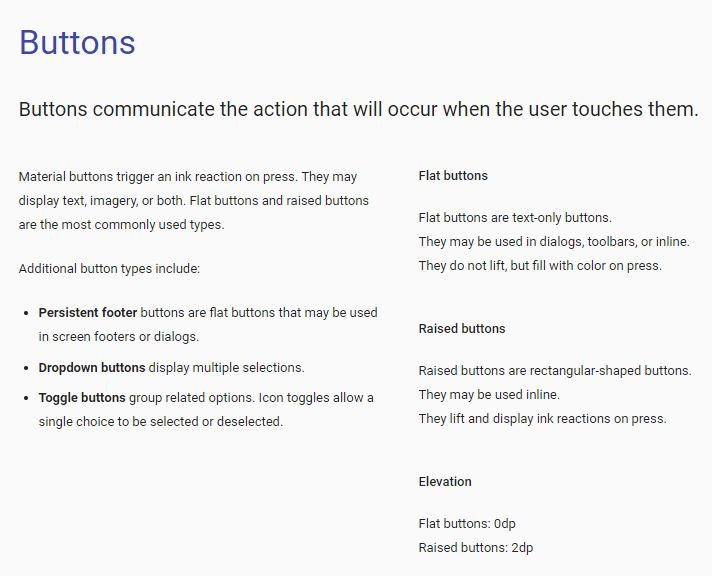
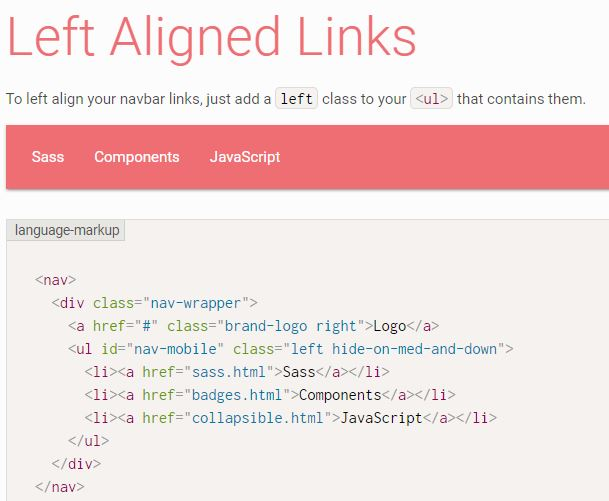

In order to create my user interface I searched the internet for websites that used the Material Design concepts to see if I could gain any inspiration for my site.
One of the first places I looked was the
Material Design Guidelines website. This is the official specification that should be followed when using
Material Design concepts. It shows examples for all components as well as general rules to follow throughout
your site.

Using this documentation it should be possible to create any element that is needed and have it conform to the
Material Design specification.
When designing a site to be responsive you should start with mobile devices first and then work up to larger devices. This makes it easier to have a consistent design that works on both a mobile and desktop device. Frameworks such as Bootstrap lead the way with mobile first frameworks and they have become the normal thing to do since then.
In practice this means writing your css classes to work with mobile and using media queries to change the display for larger devices. The screenshots below show an example of this for the teams section of the home page.
The media queries make the team photo section appear next to the individual employee bios.
Some of the influential pages I visited are shown below:

This is a good example of a menu bar and this gave me the inspiration for implementing my menu bar.
The collapsible side menu was an idea I took from the
Material Design Blog and
Dribble. I thought it was a good way of providing a menu that worked well on a mobile device.